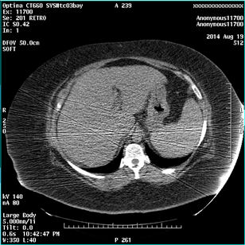
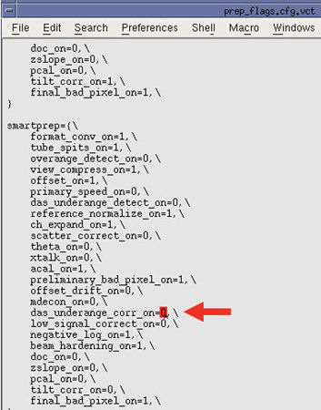

Operating Documentation
Direction 5193574-800, Rev# 22
LightSpeed 7.X Service Methods
Module Version 1.0, Version Date 2/10/15
Operating Documentation |
| Required Persons | Preliminary Reqs | Procedure | Finalization |
|---|---|---|---|
| 1 | 15 mins |
On LightSpeed VCT with 11HW12.5, 12HW14.6, 13HW31.8 and Optima CT660 with 12HW28.8, there is a possibility to have streak artifact on monitoring phase images of the SmartPrep in case of DAS count/signal is low.
This procedure describes how to set up low signal correction for the SmartPrep monitoring phase images.
Illustration 1: A Sample Image

| Last Revised: | February 03, 2015 |
| Condition | Reference | Effectivity |
|---|---|---|
Reccommend procedure completion by GE Service trained personnel. | - | - |
Application software should be in shutdown.
Open a Unix shell, and type the following.
cd/usr/g/config <ENTER>
cp prep_flags.cfg.vct prep_flags.cfg.vct.org <ENTER>
chmod +w prep_flags.cfg.vct <ENTER>
nedit prep_flags.cfg.vct <ENTER>
Change the value of the following line to 1.
(das_underange_corr_on=0 → das_underange_corr_on=1)
Illustration 2: nedit Window

Click [File], and click [SAVE], then select [Exit] to close the window.
Application software should be in shutdown.
| NOTE: | In case of Optima CT660 with 12Hw28.8, the file name is prep_flags.cfg.cj64. |
Open a Unix shell, and type the following.
cd/usr/g/config <ENTER>
cp prep_flags.cfg.vct prep_flags.cfg.org <ENTER>
chmod +w prep_flags.cfg.vct <ENTER>
xedit prep_flags.cfg.vct <ENTER>
Change the value of the following line to 1.
(das_underange_corr_on=0 → das_underange_corr_on=1)
Illustration 3: xedit Window

Click [SAVE], and select [Quit] to close the window.
No finalization steps.